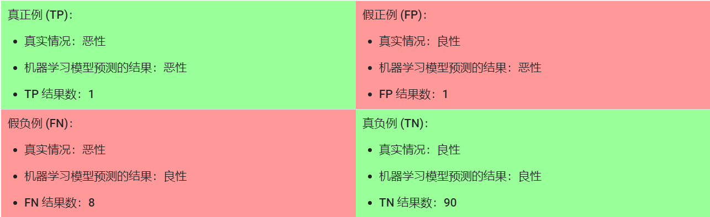

title: 准确率(Accuracy) 精确率(Precision) 召回率(Recall) F-Measure ROC曲线
date: 2019-10-11 10:32:57
tags:
以二元分类为例子，我们用一个 $2 \times 2$ 的矩阵来表示模型的分类效果，这个矩阵叫做混淆矩阵。
我们一共有477个样本，其中有18个实际有肿瘤的样本被正确预测，我们称之为 True Positve， 而有一个实际为肿瘤的样本被误判为没有肿瘤，则称之为 True Negative
同样，对于实际没用肿瘤的样本，我们可以把其分为False Positive 和False Negative
在了解了混淆矩阵后，我们就可以使用其中的元素来对准确率，召回率等进行定义。
准确率指模型预测结果正确所占的比例，根据混淆矩阵，准确率写成以下形式：
假设我们有一个新的混淆矩阵：

准确率为91%
看起来这个肿瘤分类器的准确率还不错？但是仔细分析我们的分类结果就能发现，我们一共有100个肿瘤样本，其中91个为良性，9个为恶性。再91个良性样本中，有90个被正确识别为良性。但是在9个恶性样本中，仅仅有一个被正确识别为恶性。
所以，当我们使用不平衡的(unbalanced)数据集使，准确率并不能很好的衡量一个分类器的性能。以上面的肿瘤为例，如果分类器将不加区别的将所有样本标记为肿瘤，它依然能获得91%的准确率，而这样的分类器对我们是没有任何帮助的。
根据混淆矩阵，精确率的定义如下：
其意义为在所有被预测为正样本的元素中，确实为正样本的比例为多少。 所以精确率是一项专注于正样本的指标。 当然正样本的可以由我们自己定义。
使用上面的混淆矩阵进行计算：
也就是说这个分类器预测恶性肿瘤的正确率为50%
根据混淆矩阵，召回率的定义如下：
召回率的意义是，在所有正样本中，被正确识别的概率是多少。注意召回率和精确率的差别，精确率考虑的是被分类器预测为正样本的元素，而召回率考虑的是实际上为正样本的元素。
也就是说，该分类器能够正确识别出所有恶性肿瘤的概率是11%
为了衡量一个模型，我们需要考虑精确率和召回率两者。但精确率和召回率往往是属于此消彼长的情况。我们用一个垃圾邮件分类的例子来解释这一情况。

分类阈值的右边为垃圾邮件(正样本)，左边为非垃圾邮件(负样本)。
我们来计算该模型的精确率和召回率：
如果我们尝试提高分类阈值，可以预测到的是，这将提高模型的准确率。

但事实上，虽然假正例的数量会减少，但是假负例的数量也会相应的增加。
为了能综合考虑 Precision 和 Recall 两个指标，我们使用他们两个的加权调和平均也就是F Score作为评价指标。F值的定义如下：
其中 P 和 R 分别代表 Precision 和 Recall。 当 $\beta = 1$ 的时候，就是最常见的F1，也就是：
F值综合了召回率和精确率，当F值较高的时候可以说明模型比较有效。
ROC曲线(receiver operating characteristic curve)也是一种用来显示模型分类效果的图表，不同的是它可以显示在所有分类阈值下的效果。
该曲线的绘制:

我们可以使用不同的分类阈值多次评估逻辑回归模型，但这样做效率非常低。幸运的是，有一种基于排序的高效算法可以为我们提供此类信息，这种算法称为曲线下面积。
AUC表示“ROC 曲线下面积”。也就是说，曲线下面积测量的是从 (0,0) 到 (1,1) 之间整个 ROC 曲线以下的整个二维面积.
曲线下面积对所有可能的分类阈值的效果进行综合衡量。曲线下面积的一种解读方式是看作模型将某个随机正类别样本排列在某个随机负类别样本之上的概率。以下面的样本为例，逻辑回归预测从左到右以升序排列：

曲线下面积表示随机正类别（绿色）样本位于随机负类别（红色）样本右侧的概率。
曲线下面积的取值范围为 0-1。预测结果 100% 错误的模型的曲线下面积为 0.0；而预测结果 100% 正确的模型的曲线下面积为 1.0。
曲线下面积因以下两个原因而比较实用：